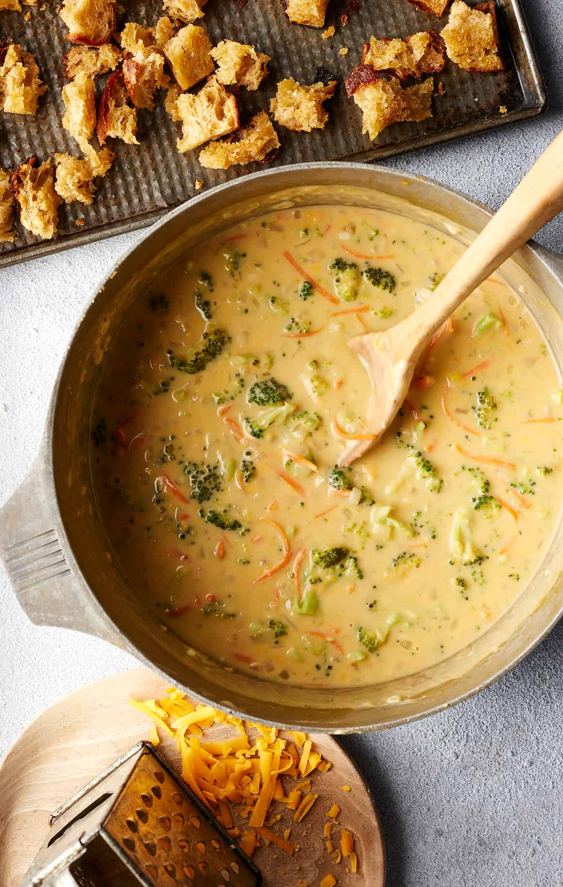

Go back Home
Broccoli cheddar soup is one of Jack’s favorite foods. Ask him about the version at Panera Bread, and he’ll go on and on about its creamy texture and rich, tangy, cheesy flavor. He never expected me to develop a broccoli cheddar soup recipe at home (unless you count this vegan twist), but with the holidays right around the corner, I thought it would be fun to surprise him with one.
So, on a gray, chilly day last weekend, when we were both craving comfort food, I finally made him this broccoli cheddar soup recipe. As we sat down with our steaming bowls, I waited anxiously to see what he’d think. I shouldn’t have worried. He took one taste and declared, “This recipe is even better than Panera’s broccoli cheddar soup!” A few minutes later, he was already heading back for seconds. I hope you love this recipe too!